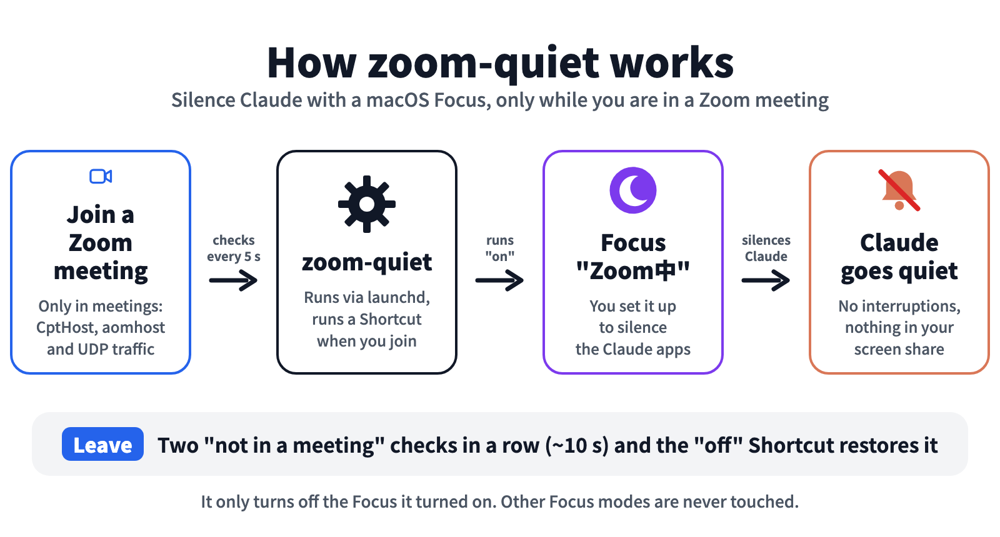

zoom-quiet
Silence Claude notifications only while you are in a Zoom meeting (macOS, open source)
How it works

Setup in 3 steps (about 3 minutes)
- Create a Focus named “Zoom Quiet” that silences the Claude app(s)
- Create two Shortcuts, “Zoom Quiet On” and “Zoom Quiet Off” (see docs/setup.en.md)
- Enable autostart:
git clone https://github.com/chaenmasahiro0425/zoom-quiet.git ~/zoom-quiet
~/zoom-quiet/bin/zoom-quiet install